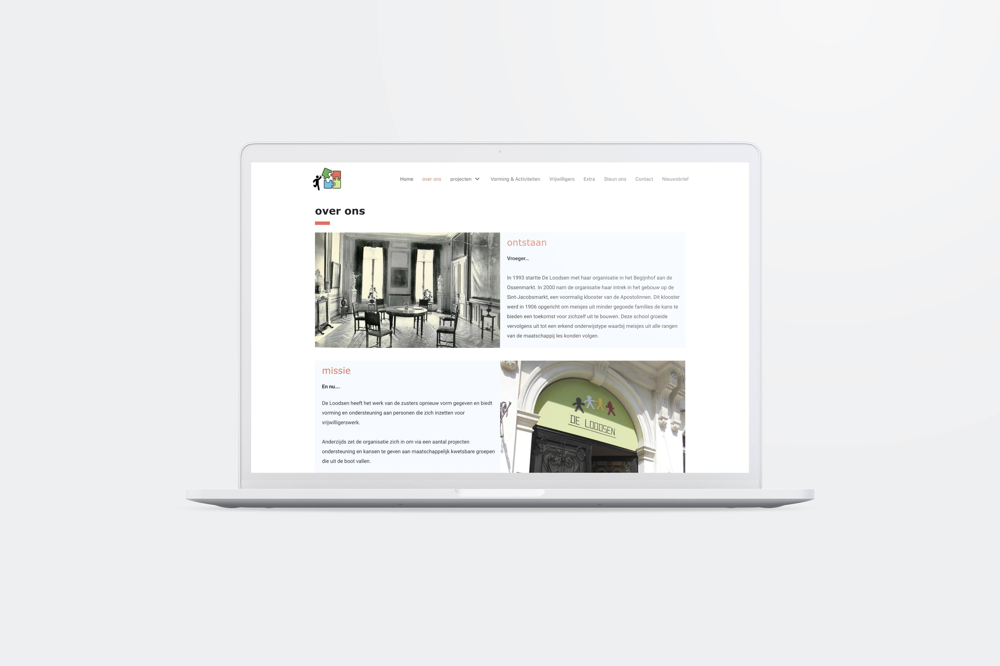
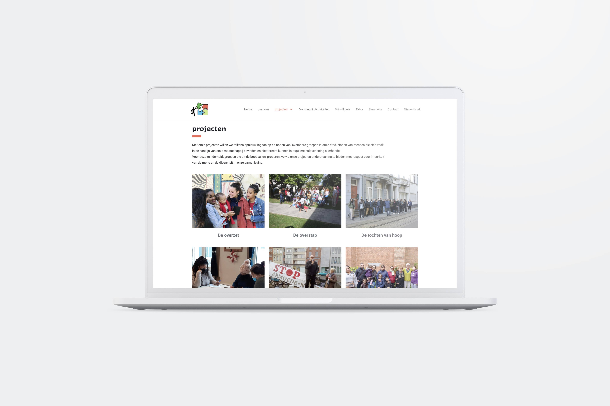
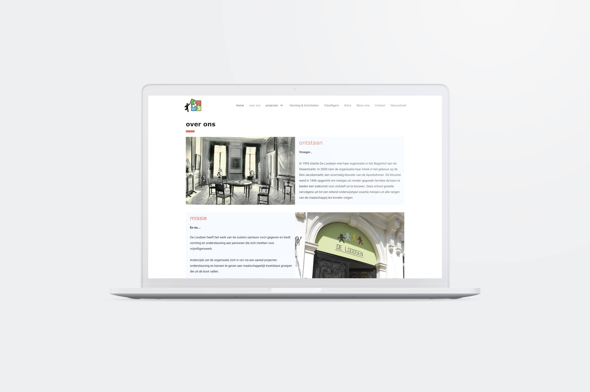
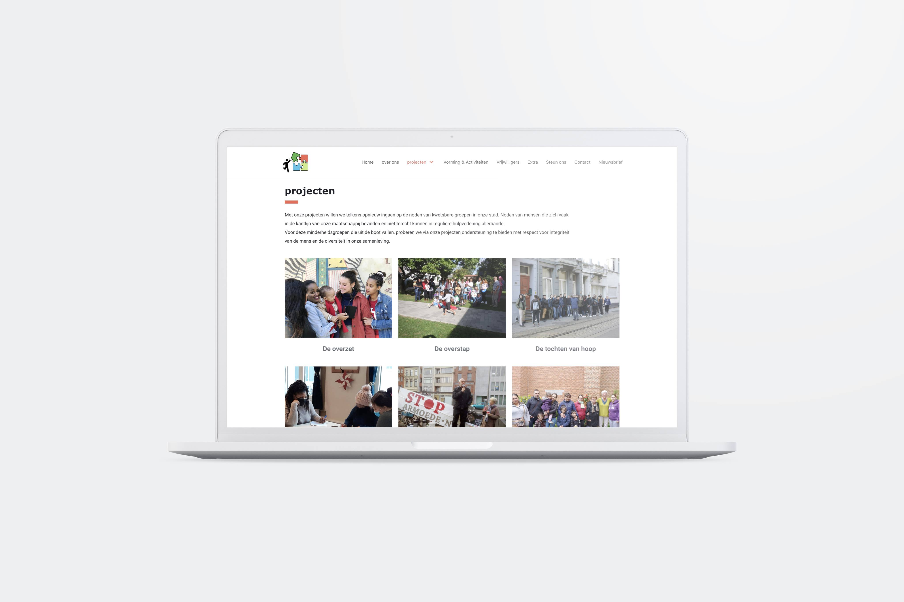

Tijdens een groepsproject voor school mochten we een vzw uit de nood helpen. Wij hebben ervoor gekozen om ons gedurende dit project in te zetten voor vzw De Loodsen. De Loodsen is een sociale vzw in Antwerpen . Ze bieden vorming en ondersteuning aan personen die zich inzetten voor vrijwilligerswerk. Anderzijds willen ze ondersteuning en kansen geven aan maatschappelijk kwetsbare groepen. Ik hield mij vooral bezig met de website. Deze kan je vinden onder volgende link: https://www.deloodsen.be/

 


